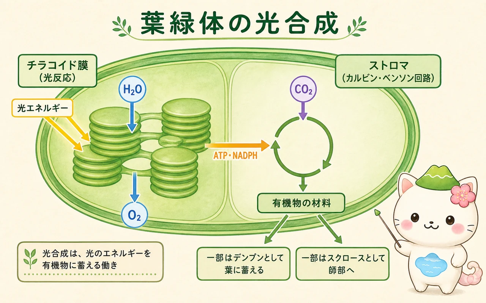
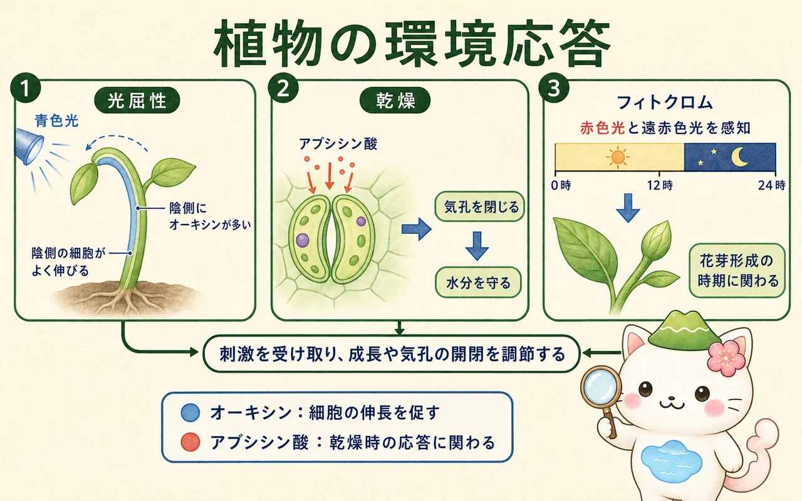

植物の体をつくる組織
植物の体は、根・茎・葉という器官に分けられます。その器官はさらに、役割の異なる細胞が集まった組織からできています。表面を覆う表皮、光合成を担う葉肉、水や糖を運ぶ維管束などです。植物の成長が続く理由は、根や茎の先端、そして茎や根の側方に、分裂できる細胞を保つ分裂組織があるためです。
茎や根の先端にある頂端分裂組織は、根や茎を長くする一次成長を担います。木本植物では、維管束の間にある形成層が細胞分裂を続け、内側に木部、外側に師部をつくることで太くなります。これが二次成長です。植物は、完成した体を一度だけ大きくするのではなく、成長点で新しい器官を作り続ける生き方をしています。
水・無機イオンと糖の輸送
根の表皮にある根毛は、土壌溶液から水と無機イオンを取り込みます。水は半透性の細胞膜をはさんで、より水ポテンシャルの高い側から低い側へ移動します。根は無機イオンを能動輸送で取り込み、根の細胞内の水ポテンシャルを下げることで、水の流入を助けます。
根から吸収された水と無機イオンは木部を通り、主に根から葉へ運ばれます。葉の気孔から水が蒸散すると、葉の細胞壁の水が減り、木部の水柱が上へ引かれます。水分子どうしが引き合う凝集力と、導管の壁への付着が、この長い水柱を保つことに関わります。背の高い木であっても、水はこの蒸散流によって葉まで届きます。
一方、葉でつくられた糖は、主にスクロースの形で師部を通って輸送されます。葉のように糖を供給する場所をソース、成長中の芽・根・花・果実・貯蔵器官のように糖を消費または蓄える場所をシンクと呼びます。師部では、ソースでスクロースが積み込まれると水が入り、圧力差によってシンクへ流れます。師部の流れは「下向き」と決まっているのではなく、必要な場所へ向かいます。


「道管は上、師管は下」と覚えると途中で苦しくなるよ。大事なのは、木部は蒸散に支えられた水の流れ、師部は糖を必要な場所へ配る流れだということ。
葉緑体と光合成
葉緑体の内部には、膜が重なったチラコイドと、その周りの液状部分であるストロマがあります。光合成は、この二つの場所でつながって進みます。チラコイド膜では葉緑素などの色素が光を吸収し、水を材料にして酸素を放出します。この過程で、細胞が使えるエネルギー通貨であるATPと、還元力をもつNADPHがつくられます。
ストロマでは、ATPとNADPHを使い、二酸化炭素を有機物の材料へ変えるカルビン・ベンソン回路が進みます。最初に二酸化炭素を受け取る物質はRuBPで、反応の途中でできる三炭糖の一部が、グルコースやスクロース、デンプンなどの材料になります。ここで重要なのは、光反応とカルビン・ベンソン回路は別々の作業ではなく、前者が後者にATPとNADPHを渡す一つの系だということです。

多くの植物はC3植物で、二酸化炭素を最初に三炭素化合物として固定します。高温・乾燥下では気孔を閉じるため二酸化炭素が不足し、光呼吸の影響を受けやすくなります。トウモロコシなどのC4植物は、まず四炭素化合物として固定してから二酸化炭素を濃縮します。サボテンなどのCAM植物は夜に気孔を開いて二酸化炭素を取り込み、昼は気孔を閉じたまま利用します。これは「どれが優れているか」ではなく、環境に応じた異なる工夫です。
呼吸と物質生産のつり合い
光合成で有機物をつくっても、植物はそのままでは使えません。細胞は呼吸によって有機物を分解し、ATPを取り出します。解糖系は細胞質基質、クエン酸回路はミトコンドリアのマトリックス、電子伝達系はミトコンドリア内膜で進みます。根・芽・花・果実・種子を含む、生きた細胞はすべて呼吸をしています。
- 総生産量：光合成によって固定した有機物の総量。
- 純生産量：総生産量から、植物自身の呼吸で使った分を引いた量。
- 純生産量の一部が、成長・貯蔵・被食・落葉へまわり、生態系の次の段階を支えます。
光が弱いときは光合成量が小さく、呼吸量と等しくなる光の強さを光補償点といいます。光補償点より強い光では、見かけ上の二酸化炭素吸収が進みます。光合成速度は光だけで決まらず、二酸化炭素濃度、温度、水、無機養分、葉の年齢など、複数の条件の影響を受けます。
植物ホルモンと環境応答
植物は神経系をもたないにもかかわらず、光・重力・接触・乾燥・温度・日長などを受け取り、成長の方向や時期を変えます。その調節に関わる信号の一部が植物ホルモンです。ホルモンの働きは一対一ではなく、濃度・組織・ほかのホルモンとの組み合わせで変わります。
- オーキシン：茎の細胞伸長、頂芽優勢、光屈性などに関わります。片側から光を受ける茎では、陰側にオーキシンが偏り、陰側の細胞がより伸びることで光の方向へ曲がります。
- ジベレリン：茎の伸長、種子発芽、花芽形成などに関わります。
- サイトカイニン：細胞分裂、側芽の成長、葉の老化の遅れなどに関わります。
- アブシシン酸：乾燥時の気孔閉鎖、種子の休眠などに関わります。
- エチレン：果実の成熟、落葉・落果、傷害応答などに関わります。
赤色光と遠赤色光を感じるフィトクロムは、発芽や花芽形成の時期に関わります。日長に応答する植物では、葉が明暗の長さを受け取り、その情報が茎頂へ伝わります。また、乾燥時にはアブシシン酸を介して孔辺細胞のイオン濃度が変わり、気孔が閉じやすくなります。二酸化炭素を取り入れることと水を守ることの間で、植物は常に調節をしています。

この冊子の要点
- 根・茎・葉は、木部と師部を介して物質をやり取りする一つの系です。
- 光合成は、チラコイド膜の光反応とストロマのカルビン・ベンソン回路が連携して進みます。
- 植物は呼吸も続けており、成長に使える有機物は光合成量から呼吸量を差し引いた分です。
- 植物ホルモンと光受容体は、動けない植物が環境に合わせて成長を調節する仕組みです。